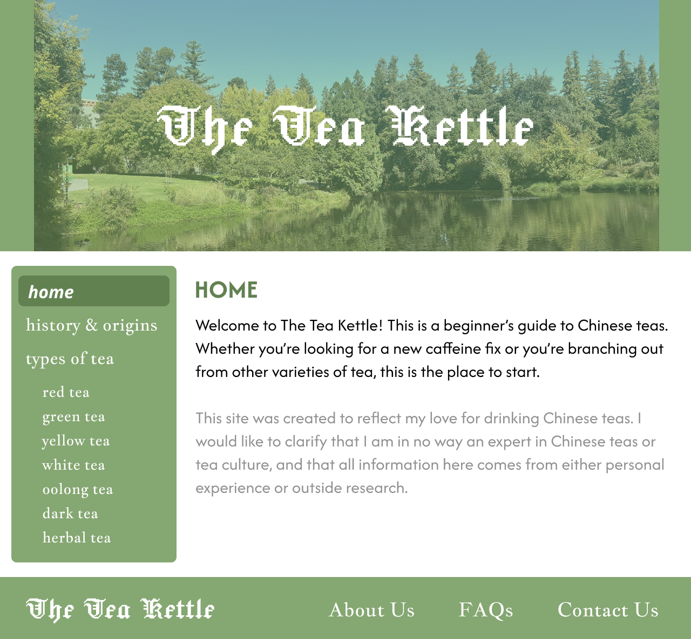
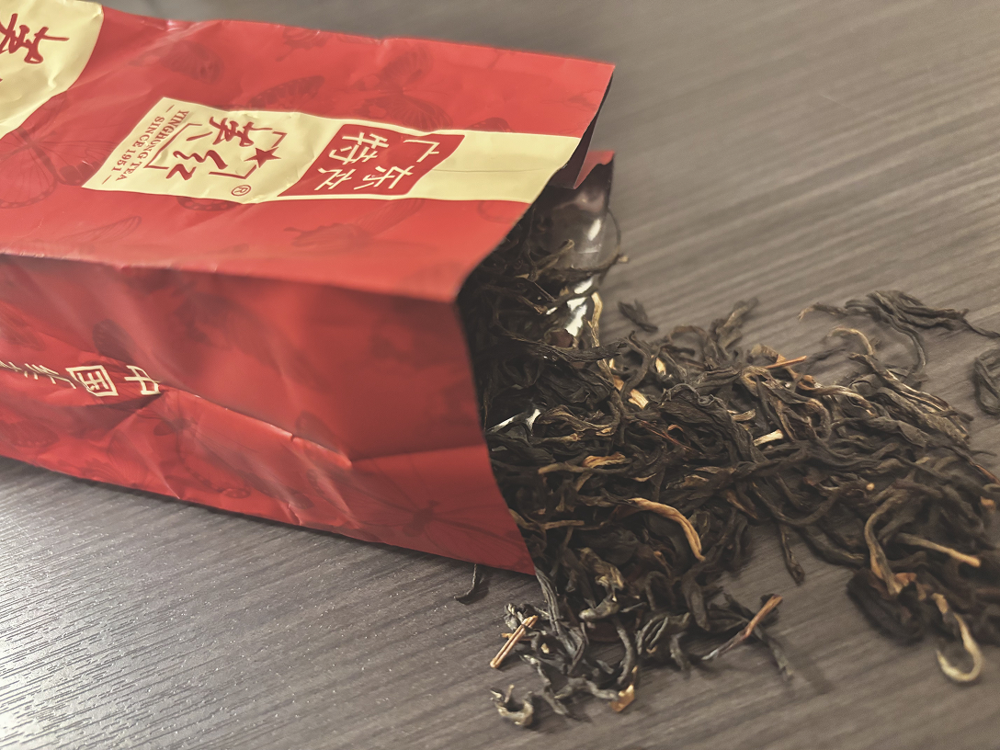
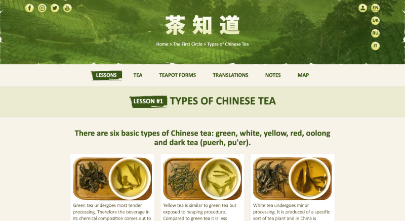
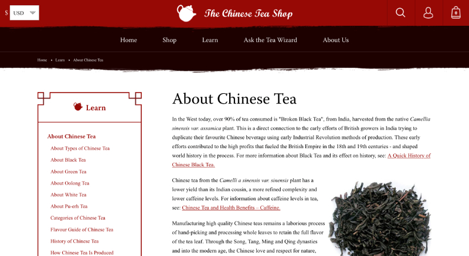
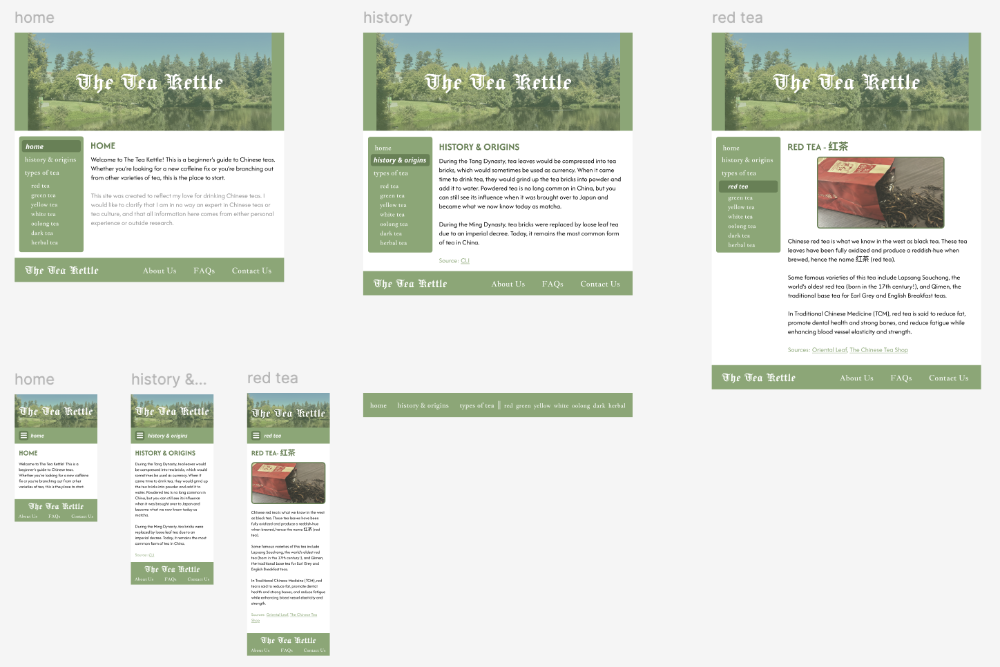
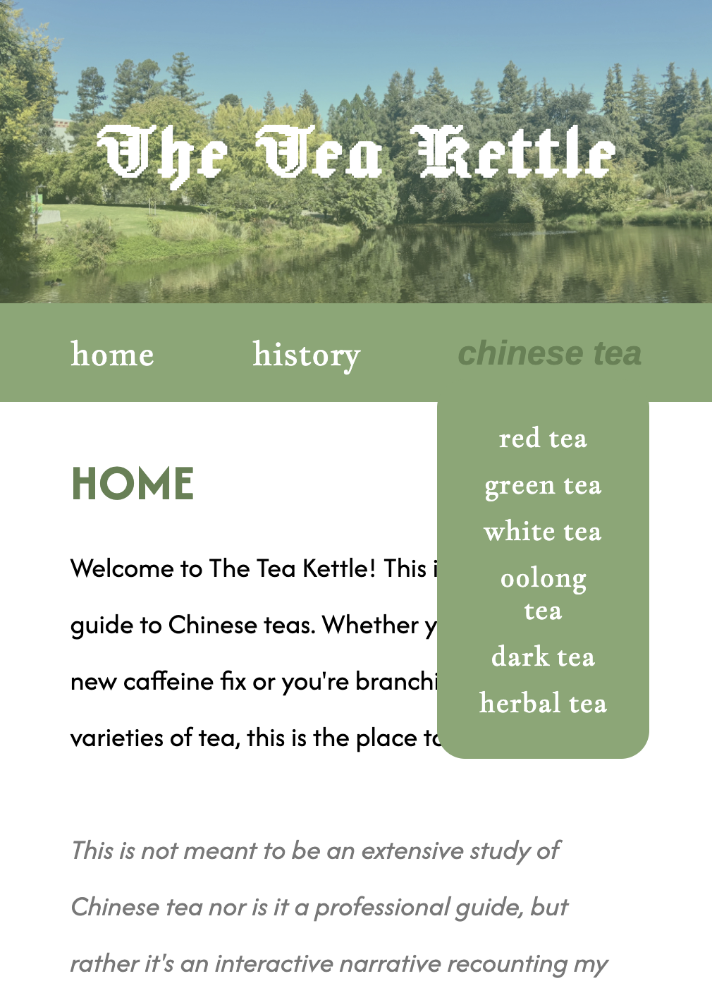

INTERACTIVE NARRATIVE: THE TEA KETTLE
This interactive narrative website was both a passion project and a final studio project for my DES 117 class, which taught me the basics of HTML and CSS. Using what I learned that quarter, I made an interactive narrative site that reflected my personal hobby and love for drinking Chinese teas.
For access to the full website, please click here. If you'd like to view the Figma, please click here.

Early Research & Concepts
When our professor first announced the topic of our final studio project to be an interactive website about anything, I immediately thought about doing something related to tea. Tea has been a love of mine since I was little, and it's also something deeply integrated in my culture and family. And although tea is quite popular as a drink in the US, most teas I find are blends that focus on floral or fruity notes rather than on the teas themselves. So when the chance came to express a story through website design, I choose to explore the history and types of Chinese teas.
I approached this project as a tea blog and chose to make it more educational in nature. One of my main concerns was making sure that all the information I found and researched wouldn't be misinterpreted and taken the wrong way. I've seen many people exoticize and talk about the benefits of tea in a way that put it on a pedestal as a cure-all and I didn't want to add to that misconception. I researched the origins and benefits of tea from sources such as specialty tea shops, Chinese culture institutes, and even the Harvard Medical School information site to make sure I wasn't misrepresenting Chinese tea and its benefits.

While it is true that tea is often said to help aid your health in traditional Chinese medicine, all of this is more cultural and comes from a more holistic view of health and the human body. All the research I came across while making this website states that any health benefits were found to be minimal and not rooted in conclusive evidence, which I made sure to emphasize in my interactive narrative.
While researching for our interactive narrative project, our professor also had us do competitive analyses with other websites within the same topic breadth as us. I scouted out two different kinds of tea-focused websites, a virtual tea school and a specialty tea shop. Chazhidao, the tea school, featured good legibility and a clear theme that really brought everything together. Even the pictures matched the atmosphere of this website. On the other hand, The Chinese Tea Shop was more formal in nature and education-heavy, focusing on the history and production of the different tea types. Both of these sites gave me a lot of inspiration and ideas to think about.


Goals & Challenges
Because this project was more personal in nature, my goal for this interative narrative site was more to showcase my experiences and love for tea. I wanted to talk about the different types of tea there were, the different health benefits and uses of tea in Chinese culture and traditional Chinese medicine, and add in my own personal opinions about the types of teas I've bought and tasted.
One of the main challenges that stumped me while working on this project was how to organize my navigation menu. I initially wanted to do a simple navigation bar underneath my header, but I ended up having too many options in my menu to fit it within the screen. I thought about cutting down the number of options in the menu bar, but I felt that all the planned options were too important to skip out on any of them. Finally, I took inspiration from the competitive analysis I did and decided to put the navigation menu in a side section. I took inspiration from blog designs and tea shop websites where they would have a sidebar menu to make all the webpages easy to navigate for the user.

However, the bigger problem now was the navigation menu for the mobile viewport. I initally thought to do a menu button that once clicked, would pop out a menu overlay. However, at the time of the project we hadn't learned how to do button functions or JavaScript yet. So I had to make this website work with only basic HTML and CSS. I thought through multiple options, from having a menu bar where the menu options would just be spaced out below the header to having the menu at the bottom of the page. In the end, I consulted my professor and friends for advice and chose to go with a dropdown menu instead of a button menu.

Imagery & Themes
From the early conception of this project, I had already known that I would be going with a green theme. Green is a calming color that invokes imagery of nature and tranquility, which is exactly what tea embodies. I made everything sage green and even tinted the photos a little green to make all the entire website feel more cohesive. Even the main header image was a carefully taken photo of the Davis arboretum to really highlight the nature-like and calming feeling of tea.
For the typefaces, I chose to use a sans-serif font for the body and headings of each page. Since I had so many pages of text on this project, I wanted to use a font that would be easy on people's eyes and simple enough to match the theme. As for the navigation menu, I chose something a more formal looking font that would change into an sans-serif font when the user hovers over the menu option. This would make the site feel a bit more put together and make it obvious which option the user was clicking. As for the heading, I wanted to add a bit of personal flair to this project, so I chose a typeface that would emulate the font of The New York Times.